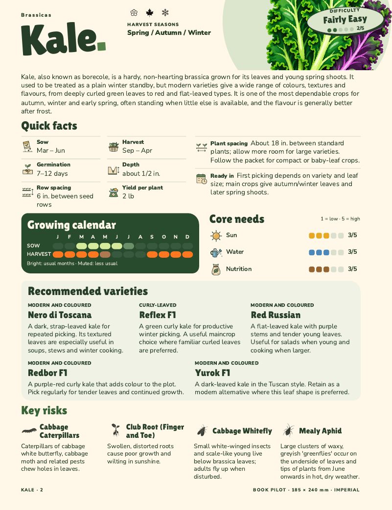
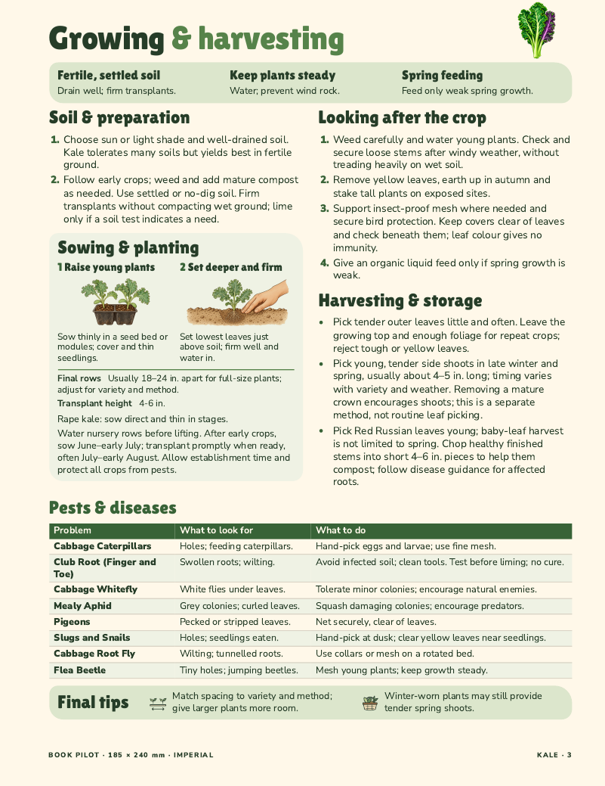

What changed
- A larger, tilted Kale title and a close crop of the approved artwork at roughly three times its previous scale. Seasons and their symbols sit centrally. A pale family-coloured circle frames the enlarged hero, and the difficulty sticker sits over the artwork in the top-right corner.
- The header is only about 2 mm taller. All body type, words, facts and illustrations below it are retained; Kale still occupies two pages.
- Short Quick Facts grouped together, with longer qualifications alongside them.
- The three-part reminder banner and 28.5 pt page-two title remain. The redundant “Kale / Growing Guide” line is removed, recovering about 5 mm of height.
- Tighter source-based summaries and a shallower Final Tips strip preserve 9 pt main text and the planting drawings’ size.
- All eight facts, five varieties, four Key Risks, eight pest rows, both planting drawings and both Final Tips retained.
- Troubles uses two natural columns, smaller headings, closer paragraph spacing and text wrapping beside complete drawings. Spare height is distributed between entries so the first and last text lines of the columns align. Six entries fit on one page; no Troubles wording has been cut. This remains an excerpt of the 15-condition guide.
Approved page-two summaries
The top reminders are restored: fertile, settled soil; steady plants; feeding only weak spring growth. Their short wording is supported by the detailed advice below.
Soil, care, harvesting and planting copy has been tightened to recover the space. All timings, measurements, conditions and cautions remain, including soil-test-led liming, weak-growth-only feeding, protection of young crops, the separate spring-shoot harvest method and disease guidance for affected roots. The stem-chopping repetition is merged.
Seed depth, nursery-row spacing and final plant spacing still appear once in Quick Facts; final-row spacing and transplant height remain in Sowing & planting. The first Final Tip is shorter, and its heading now fits on one line. No full source records have changed.
Typography and checks
| Main advice / introduction / fact values | 9 pt; about 11.2–11.7 pt leading |
|---|---|
| Variety descriptions | 8.6 pt |
| Pest table / risk descriptions | 8.25 pt |
| Planting captions / measurements | 7.9 pt; explanatory notes 8.25 pt |
| Opening title / hero crop | 57 pt, −4° tilt / enlarged approved artwork, 16° tilt |
| Page-two title / section headings | 28.5 pt / 15.75 pt |
| Troubles headings / main advice | 15 pt / 9 pt, with 11.25 pt leading |
| Diagnostic illustration boxes | About 29 × 33 mm; full artwork, uncropped |
| Binding margins | 15 mm inside / 10 mm outside |
| Content-to-footer clearance | At least 3.4 mm in both units |
This revision responds to John's request to restore the title's visual interest and enlarge the hero. The opening header changes; Kale page two and the aligned Troubles page are visually identical to the previous proofs.
Both unit editions have three physical pages: two Kale pages and one Troubles page. Fonts are embedded; images and entry coverage checked. The restored circle and top-right difficulty sticker are approved. The approved Troubles alignment is retained. Print at actual size to check the smaller drawings and supporting text.
What the older book taught us
Measured text-line spacing in the supplied photograph is approximately 8.5–9.5 pt for the compact practical text and 10–11 pt for the introduction, assuming a 240 mm page height. Perspective and page curvature prevent exact font-size measurement; these are line-spacing estimates, not recovered font settings.
Its main savings come from restrained headings, close paragraph spacing, text beside images and little internal padding. This pilot adopts those techniques while retaining our visual identity and more generous main-text leading.